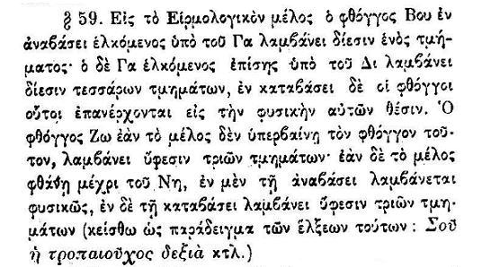
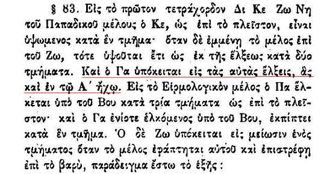
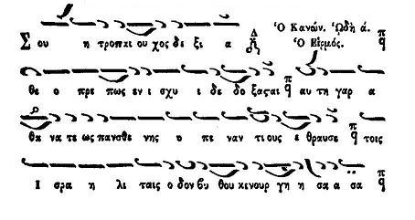

In the heirmologic melodies the note BOU on ascent is attracted by GA and is sharpened by one tmema [i.e. two moria] and the note GA as well is attracted by DI and is sharpened by four tmemata [i.e. eight moria], on descent these notes remain natural. The note Zw when the melody does not go beyond it is flattened by three tmemata [i.e. a semitone], but when the melody goes to Ni, on ascent it is taken natural and on descent it is flattened by three tmemata. As an example of these attractions see [the heirmos] "Sou he tropaiouchos dexia".

Furthermore when discussing the Fourth Mode papadic, the Committee tells us that GA of the Fourth Mode papadic behaves as GA of the First Mode.

Classical score from Mousike Bibliotheke

Sound examples
"Sou i Topaiouhos Dexia"Thrasyvoulos Stanitsas [rm, 231 KB] (from cmkon.org).
Georgios K. Michalakis [wma, 274 Kb]
Parallage/Melos
Georgios K. Michalakis [wma, 282 Kb]
with comments on intervals (in English) regarding GA and ZW of First Mode
Case study: Apolytikion of St. Lazarus
Score from a book by Ioannis Papachronis (student of Simon Karas)
[jpg, 50 Kb]
{kind=link}
(Notice the systematic sharpening of GA)
Composition in English by John M. Boyer (student of Lykourgos Angelopoulos)
[jpg, 70 Kb]
{kind=link}
(Notice the small GA-DI interval on the second line)
Sound example by Thrasyvoulos Stanitsas
[wma, 200 Kb]
Sound example by Konstantinos Bilalis (student of Simon Karas?)
[mp3, 550 Kb]
Case study: Apolytikion Tou lithou sfragisthentos
Score and theoretical presentation of the melodic attraction of GA by Avraam Efthimiadis (Thessaloniki School):
[jpg] (from Efthemiadis' theory book)
{kind=link}
Score by Georgios Konstantinou (Karas' school)
[pdf] (from Konstantinou's theory book)
Sound example by Thrasyvoulos Stanitsas
[rm] (from mousikofiloi.org)
Sound example by Ioannis Damarlakis (Crete).
[wma] (offered by Shota Gugushvili)
D. Koubaroulis:Compare the above scores and notice the differences when notating (or not) melodic attractions in similar theseis. Given the utter confusion among different composers and theoreticians over the issue of notating elxeis, does it make sense to notate them at a such fine level of detail at all? Is it not better to learn them by ear? Efthemiadis supports that GA is raised on ascent by 8 moria, following the recommendation of the Patriarchal Committee. However he notates it with a simple, uncrossed sharp sign. I also support such simple notation, if the melodic attraction is to be notated at all. In the two recordings presented above, Stanitsas does traditional intervals. Damarlakis sounds off-key at places.